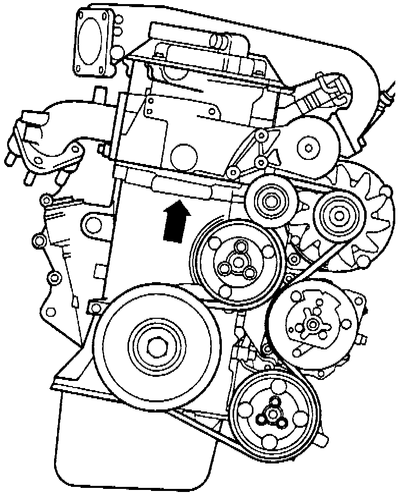

Engine Codes

The engine number (Code Letters and Serial Number) can be found on the vibration damper end of the cylinder block (arrow).
NOTE:
- There is also a sticker on the cylinder head cover that shows the engine code and serial number. The engine code is also inscribed on the vehicle data plate.
- The number is visible by looking through from the right front side, between the suspension strut tower and air cleaner.